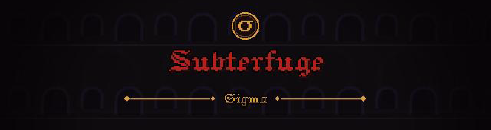

El templo se está compactando. Bajas a averiguar por qué.
Demo en desarrollo · arte provisional
El Cirujano y el resto de personajes llevan un diseño provisional, hecho para poder jugar. El arte definitivo se está pintando a mano, píxel a píxel.
Se juega con teclado o mando
Sigma todavía no tiene controles táctiles. En el celular puedes jugar el teaser de Subterfuge, que sí los tiene.
Con teclado o mando. La primera carga son unos 50 MB. La partida se guarda en este navegador.
- Moverse
- A D · ← →
- Saltar
- Espacio
- Golpear
- J · clic
- Parar el golpe
- K · clic derecho
- Interactuar
- E
- Controles y objetivo
- H
- Pausa
- P
- Beber la poción
- Q